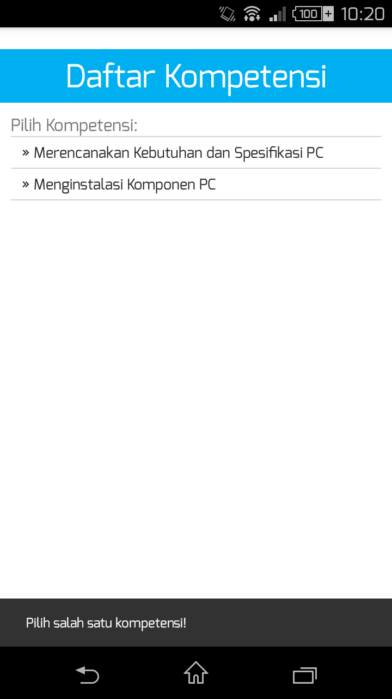
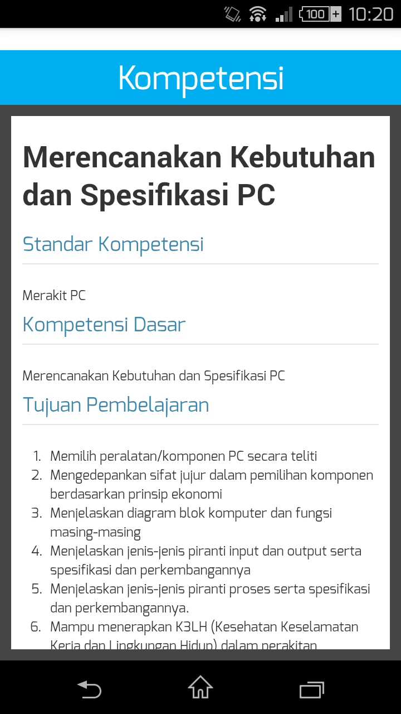

Untuk menggunakan fitur Kompetensi, sentuh pada menu "Kompetensi"
Aplikasi akan membawa Anda menuju daftar kompetensi yang ada di dalam aplikasi ini.

Langkah selanjutnya adalah, Anda memilih kompetensi mana yang akan Anda lihat. Setelah memilih salah satu kompetensi, aplikasi akan membuka kompetensi sesuai dengan kompetensi yang Anda pilih.

Untuk kembali, tekan tombol Back Button.